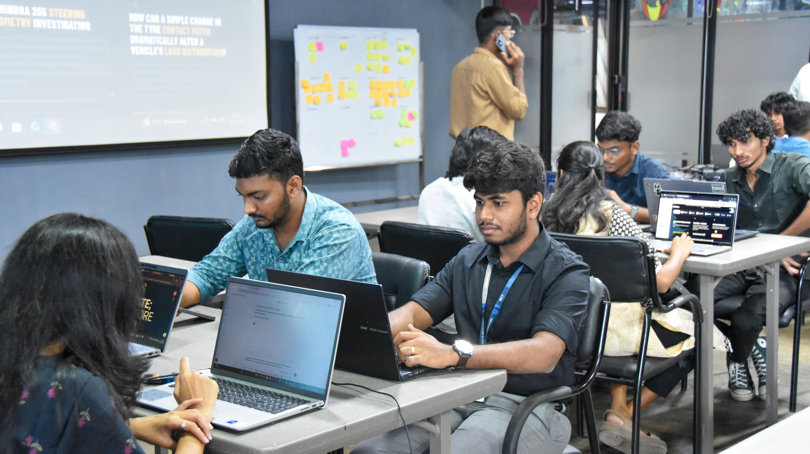
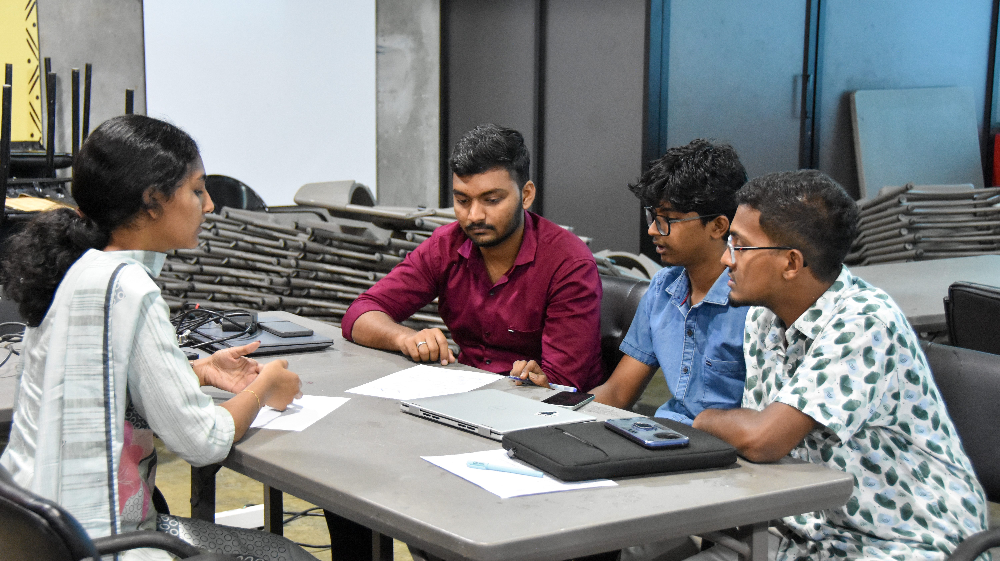
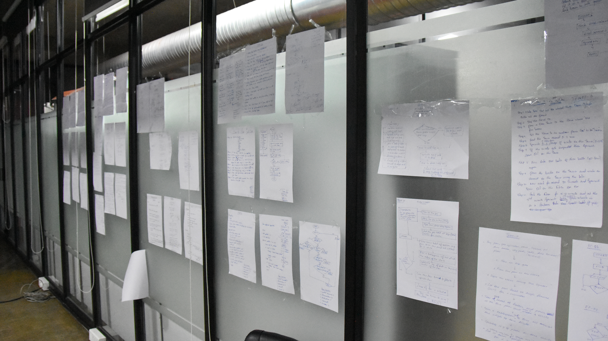

ProtoSem Journal - Week 02
From Ideas to Applications: Coding, Design, and Building
This week represented a transition from learning about structure and professional discipline to exploring creativity, design thinking, and practical problem-solving. Through lectures, interactive activities, and hands-on tasks, I started connecting concepts with real-world applications. I also understood how innovation can develop through limitations, collaboration, and curiosity.
What I learned
- Learned about frugal innovation and how meaningful solutions can be developed even with limited resources.
- Participated in the GIE Rubrics Evaluation, improving observation, critical thinking, teamwork, and decision-making.
- Explored design thinking and basic coding concepts to strengthen problem-solving and creative confidence.
- Began transforming simple ideas into organized, practical, and useful applications.
Big takeaway
True innovation is not about having access to more tools or resources. It is about using creativity, discipline, and ideas effectively to identify and solve the right problem.
Week 2 in pictures




Learning reflection
Day 1: Frugal Innovation and Team Building
The week started with an auditorium session conducted by Prof. Mukesh Sud, who discussed his book, Lean Spark: Frugal by Design, Global in Impact. His session explained how innovation does not always come from having abundant resources. Instead, limitations, creativity, resourcefulness, and disciplined thinking can lead to effective and meaningful solutions.
In the afternoon, we participated in the GIE Rubrics Evaluation. The task encouraged us to identify patterns, analyze information carefully, and collaborate as a team while assessing quality, structure, and performance criteria. It showed me that communication, teamwork, cooperation, and the ability to remain composed under pressure are equally important as individual knowledge.
Days 2-5: Design Thinking and Creative Execution
During the following days, the focus shifted toward design thinking and project-based learning. We organized our thoughts, understood problems systematically, and explored ways to turn concepts into practical applications. Rather than immediately searching for an answer, we learned to observe the situation, analyze the problem, test possible approaches, and improve our solutions based on the results.
Final reflection: By the end of the week, I felt more confident approaching problems creatively while maintaining a structured and disciplined mindset. The week built a strong foundation in creativity, problem-solving, teamwork, and application-oriented thinking.